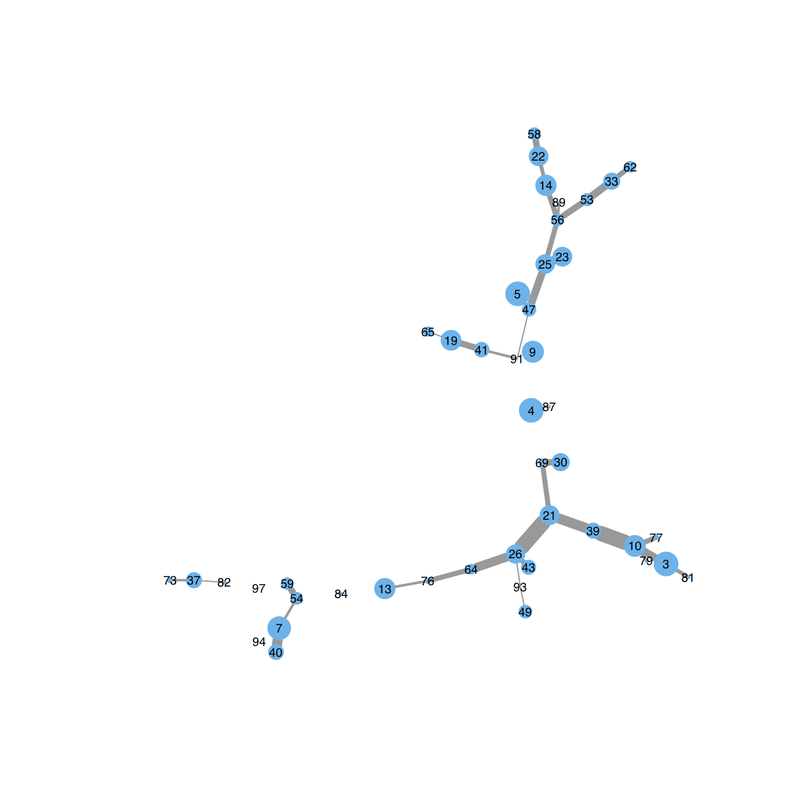

eConsensusGraph is supposed to append the confidence
information (extracted from a list of the source graphs)
into the target graph. The confidence information is about
how often a node (or an edge) in the target graph that can
be found in the input source graphs. The target graph is an
object of class "igraph" or "graphNEL", and the source
graphs are a list of objects of class "igraph" or
"graphNEL". It also returns an object of class "igraph" or
"graphNEL"; specifically, the same as the input target
graph but appended with the "nodeConfidence" attribute to
the nodes and the "edgeConfidence" attribute to the edges.
dNetConfidence(target, sources, plot = F)
an object of class "igraph" or "graphNEL", which is a target graph but appended with the "nodeConfidence" attribute to the nodes and the "edgeConfidence" attribute to the edges
None
# 1) generate a target graph according to the ER model g <- erdos.renyi.game(100, 1/100) target <- dNetInduce(g, V(g), knn=0) # 2) generate a list source graphs according to the ER model sources <- lapply(1:100, function(x) erdos.renyi.game(100*runif(1), 1/10)) # 3) append the confidence information from the source graphs into the target graph g <- dNetConfidence(target=target, sources=sources) # 4) visualise the confidence target graph visNet(g, vertex.size=V(g)$nodeConfidence/10, edge.width=E(g)$edgeConfidence)
visNet
Fang H, Gough J. (2014) dnet: an open-source R package for integrative analysis of high-throughput digitised data in terms of network, ontology and evolution. http://dnet.r-forge.r-project.org
){kind=link}